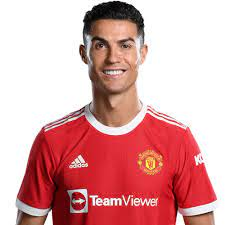
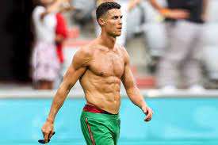

Cristiano Ronaldo dos Santos Aveiro GOIH ComM born 5 February 1985) is a Portuguese professional footballer who plays as a forward for Premier League club Manchester United and captains the Portugal national team. Often considered the best player in the world and widely regarded as one of the greatest players of all time, Ronaldo has won five Ballon d'Or awards[note 3] and four European Golden Shoes, the most by a European player. He has won 32 trophies in his career, including seven league titles, five UEFA Champions Leagues, one UEFA European Championship, and one UEFA Nations League. Ronaldo holds the records for most appearances (183), most goals (140), and assists (42) in the Champions League, most goals in the European Championship (14), most international goals by a male player (115), and most international appearances by a European male (186). He is one of the few players to have made over 1,100 professional career appearances, and has scored over 800 official senior career goals for club and country.
here are some of his picture
for more information you can visit his official website
click here